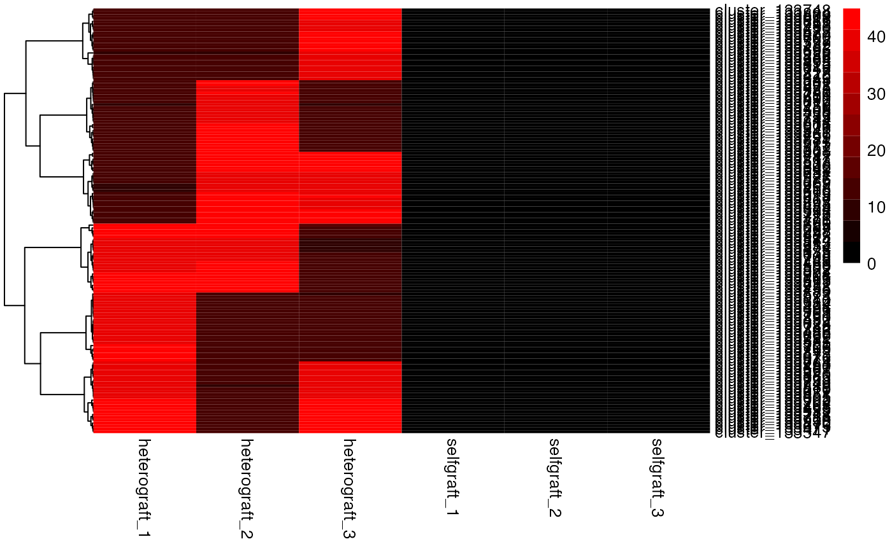

Undertakes RPM/FPKM normalisation using a pseudocount and transforms the data using log-scale, to enable visualization of the differences and patterns in expression across samples using a heatmap.
Arguments
- data
Dataframe; Must follow the structure created by
mobileRNA::RNAimport().- pseudocount
numeric; pseudocount, default is
1e-6- colours
vector of colors. Default is
grDevices::hsv(1,1,seq(0,1,length.out = 12))- cluster
logical; include hierarchical clustering when default
cluster= TRUE- scale
character; indicating whether the values should be centered & scaled in either the row direction or the column direction, or none. Respective options are "row", "column" & "none". Default,
scale="none".- clustering_method
Character; clustering method used. Accepts the same values as hclust. Default
clustering_method= "complete"- row.names
logical; indicated whether to include cluster names as rownames. Default
row.names=TRUE- border.color
border colour, default is no border, NA.
Details
Undertakes FPKM/RPM normalisation using a pseudocount and then
transforms the normalised-RPM data using log-scale. The
mobileRNA::RNAimport() function will include the RPM data
columns for sRNAseq data processed by ShortStack, while with mRNAseq data
the function calculates FPKM.
The data is then plotted as a heatmap, utilising the pheatmaps package.
This function expects to receive a dataframe containing FPKM/RPM data from sRNA-seq studies. This function employs the use of a pseudocount during normalisation as the function is expected to be used when identifying mobile sRNAs in a chimeric system. In such system, it is expected that control replicates will contain zero values for the candidate mobile sRNA clusters.
Examples
data("sRNA_data_mobile")
# plot heatmap of potential mobile sRNAs
p1 <- plotHeatmap(sRNA_data_mobile)
